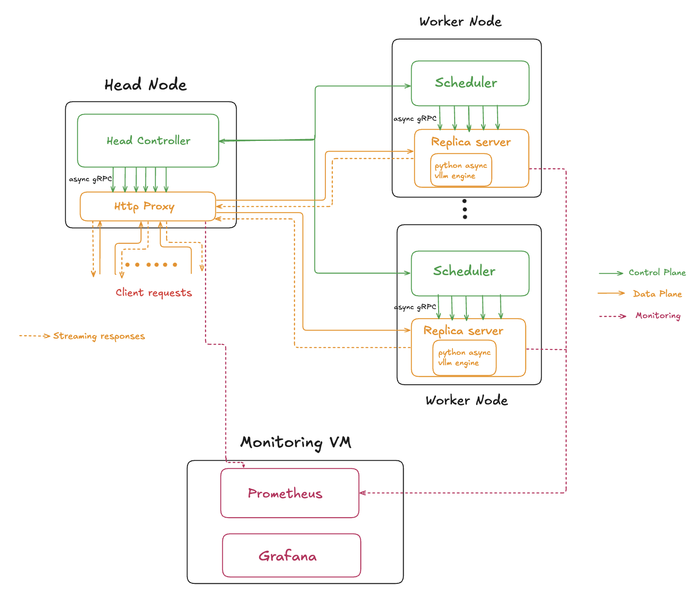

In my previous blog,
I shared how I built an LLM serving system that could stream model responses in real time. As I started to test the system further, a few limitations began to emerge:
The GPU utilization was not optimal even when I was overloading a replica with requests, which meant GPU is not being utilized to its full potential.
Latency started to creep up during load on the client side but a similar behavior was not seen on the vLLM side.
Starting more than 3 replicas caused an increase in end to end latency.
The initial version, built entirely in Python, ultimately ran into the inherent limitations of Python's Global Interpreter Lock (GIL) and event loop contention, which bottlenecked performance under heavy, concurrent loads.
This sparked a change in a few components of the system. This post details the new changes in the system. This version strategically uses a hybrid C++/Python approach to combine raw performance with a rich machine learning ecosystem, tackling the previous version's shortcomings.
The Bottleneck in Detail: A Blocked Event Loop
So, why exactly does a single event loop cause such a problem? The issue lies in how Python's asyncio event loop handles different types of tasks based on a model of cooperative multitasking.
I/O bound tasks: Async excels with I/O heavy work, such as network requests. While one task waits for I/O to complete, it yields control so other tasks can run, keeping the system responsive even under heavy concurrency.
CPU bound tasks: When a CPU bound task runs, the event loop’s efficiency drops sharply. A task like tokenizing a large batch of text can monopolize it, preventing other work from running. During this time, no new requests are processed, leading to significant queuing delays.
This queuing behavior is precisely what happened in the original system. The CPU intensive tokenization step would stall the entire process, preventing the server from handling concurrent requests efficiently and creating a pipeline bottleneck that starved the GPU of data.
The diagram below shows that the average end to end latency at the vLLM is about 20s less compared to the latency at the proxy showing significant queuing during high load.
Figure 1:Avg end-to-end latency(Old system)
High Level Architecture
The system still has the same logical planes, control and data plane. But the planes are now completetly separated and do not have any overlapping components.
Control Plane: This is the system's brain. It manages deployment metadata, replica lifecycles, routing, and health monitoring. It doesn't handle any client traffic directly. The original python implementaion is kept intact.
Data Plane: This design has changed. Now, the requests are directly routed from the HTTP proxy to the replicas bypassing the scheduler. This reduces the delay in the data path.
This separation allows the data plane to be highly optimized for low latency processing while the control plane focuses on maintaining system stability and state.

Figure 2:LLM serving system
We will now look at the changes in each plane.
Control Plane
Most part of the control plane is the same as the original version. The main difference is that the Scheduler does not particiapte in the data path and it only manages the lifecycle of the replicas.
Data Plane
The Data Plane has significantly changed from the previous design.
HTTP Proxy
In the new design, HTTP Proxy is implemented in C++, avoiding the single event loop bottleneck of Python. HTTP requests and gRPC connections run in separate async loops, which are both coroutine based, enabling non-blocking processing and smooth backpressure during token streaming.
Replica Sever
In the previous design, the entire replica logic was run as a single Python process, which became a major bottleneck. In the new version, the replica server is split into two parts.
The first part of the server is implemented in C++ which runs the gRPC server and handles the token streaming.
This server embeds a Python runtime which runs the vLLM asynchronous generation.
C++ gRPC threads handle incoming requests and token streaming, while a dedicated Python thread runs the async generation loop
The new design offsets the major bottlenecks of the previous design and delivers a low latency system.
The deployment setup is similar to the previous version and is discussed in the previous blog.
Design Decisions
Let’s talk about the most important architectural decisions behind the new system and more importantly, why they were made.
Dual Language Implementation: Performance critical networking and streaming are handled in C++, avoiding Python’s GIL and giving fine control over concurrency. Python stays where it’s strongest, running the model with vLLM and managing orchestration, so I get both speed and flexibility.
Asynchronous concurrency- C++ 23 coroutines and Boost.Asio power the proxy, while Python’s `asyncio handles orchestration and model tasks. This design supports high concurrency without blocking.
Threaded Replica Server: Replica networking uses a multi threaded design, which is simpler to implement and works well for the current system. If needed in the future, it can be moved to a fully async model for greater scalability.
Load Testing & Evaluation
To evaluate the new design, I used a setup similar to the previous version and ran Locust to simulate real user load against the deployed architecture.
This section presents the load test results and compares them with those from the earlier design.
The system was tested using Locust with up to 1,000 concurrent users, simulating realistic traffic patterns.
Each request used a medium length prompt of 300–500 tokens and requested up to 500 output tokens.
All requests were served by 4 active replicas running the TinyLlama model, deployed on separate VMs with A10G GPU and 16GB VRAM.
Figure 3: Locust test results(Older version)Figure 4: Locust test results(Newer version)
The graphs above compare Locust test results for the previous and new versions of the system.
In the earlier design, the 95th percentile end-to-end latency climbed to ~80 s at peak load, whereas in the redesigned system it stays between 40–45 s, nearly halving latency and delivering a 2x–2.5x boost in responsiveness.
The graphs below show the prometheus metrics for the newer version of the system.
Figure 5: Active requests(Prometheus)Figure 6: 95th percentile of vLLM end to end latency(Prometheus)Figure 7: GPU utilization(Prometheus)
System Responsiveness: The system consistently handled around 1,000 active requests. The stable nature of the graph during sustained load indicates no significant request queueing.
Inference Latency: The 95th percentile end-to-end latency at vLLM stayed capped at 50 seconds,comparable to the Locust test (Figure 4), effectively removing the bottleneck from the previous design.
GPU Utilization: GPU usage peaked at about 60%, indicating that for the given load, the GPU was being driven close to its full potential.
Overall, these metrics show that the new design effectively removes previous bottlenecks and delivers a more robust, scalable system.
Future Improvements
In the next version of the system, I plan to explore:
Autoscaling with SLOs: Dynamically scale replicas based on response times and queue depth.
Persistent Storage: Explore storage options for presistence and fault tolerance.
Closing Thoughts
This redesign takes the lessons from the first version and turns them into a system that is faster, more scalable, and more resilient. For me, this was more than just an optimization exercise, it was an opportunity to deepen my understanding of building high performance, distributed systems. If you’re working on similar challenges, I’d love to hear about your approach.
For deeper technical details, you can refer to the design document.